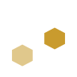
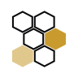

Brand change guide
Every colour, typeface, and icon on an Oxagen or Stella page starts in the oxagen-brand repo. This guide shows how to change each one, how the change reaches each site, and what still stops it from getting there on its own.
Status
The kit, its checks, and its Storybook work. No change has reached another repo yet.
Every pull request runs the generator checks, the typecheck, the tests, the Storybook build, and the bundle build.
Each merge to main deploys the playbook, the Storybook, and this guide once the checks pass.
The oxagen-branding skill reads the kit from main on every run, so an agent sees a change as soon as it merges.
The fan-out has failed on every merge, because the BRAND_SYNC_TOKEN secret does not exist. One-time setup fixes it.
Two of the five repos have a sync script the fan-out can run: oxagen and stella. The other three are tracked under #28.
The daily check finds 2 of 12 repos and sites matching the kit. Its live report is #33.
One-time setup
Only you can take these four steps, because each one needs your GitHub account. After them, every merge to the kit opens a sync pull request in each repo.
-
Create the sync token.
Open github.com/settings/personal-access-tokens/new and fill it in like this:
- Token name:
oxagen-brand fan-out. Resource owner:macanderson. - Repository access: only select repositories. Pick
oxagen,stella,oxagen-roadmap,oxagen-gtm, andoxagen-survey. - Permissions: Contents, read and write. Pull requests, read and write. GitHub adds Metadata, read only, by itself.
- Expiration: your choice. When it lapses, the fan-out fails with an error that names the secret.
- Token name:
-
Save it in the kit.
Run this, then paste the token when it asks.
gh secret set BRAND_SYNC_TOKEN -R macanderson/oxagen-brand
-
Let sync pull requests merge themselves.
oxagenandstellaalready allow auto-merge. These three repos do not.gh repo edit macanderson/oxagen-roadmap --enable-auto-merge gh repo edit macanderson/oxagen-gtm --enable-auto-merge gh repo edit macanderson/oxagen-survey --enable-auto-merge
-
Send the current kit to every repo.
It runs each repo's sync against the kit. Expect sync pull requests in
oxagenandstella, and failed jobs for the other three repos until their sync scripts land.gh workflow run fan-out.yml -R macanderson/oxagen-brand
Change path
A change goes through three stages. The dashed step is the one that does not run yet.
In oxagen-brand
build/color.py, a face in build/typeset.py, an icon in build/marks.py.build/build.py rewrites the tokens and every mark, icon, and image that uses them.On merge
main on its next run.BRAND_SYNC_TOKEN. The fan-out runs each repo's sync script against the merged commit.In each repo
oxagen-gtm and oxagen-survey, which deploy by hand with vercel deploy --prod.The short path. You don't need to run anything yourself. Give an agent one of the prompts below. It edits the kit, runs the generators, and opens the pull request. You review the previews and merge.
Brand colour
One generator run recolours the token files, every logo and icon, the favicons, splash screens, wallpapers, social cards, ads, content cards, and spinners. Both brands change together.
- Change the constant.
In
build/color.py, changeGOLD. Its two neighbours, gold-bright and gold-deep, are derived from it. To move the hue, also change the hue inGOLD_BRIGHT_LCHandGOLD_DEEP_LCH, and the two pinned hex values the generator prints. - Run the generators.
.venv/bin/python build/build.py, thenbuild/playbook.pyandbuild/messages.py. - Update the hand copies.
A few copies sit outside the generators: the gold ramp in
ui/src/styles/globals.css,BRAND_GOLDand its test, the skill'ssystem.md, the install prompt, andsdlc/.CHANGING.mdlists each one. - Open the pull request.
The check fails if any text colour drops below 4.5:1 contrast on its ground.
In macanderson/oxagen-brand, change the house gold to #______. Follow CHANGING.md, "Change a colour token": edit build/color.py, run the generators, update every hand copy it lists, and open a pull request with --label agent-monitored-pr. Put the new 512px icons and the light and dark wordmarks in the PR body so I can compare them.
Typefaces
The house uses three faces, all under the SIL Open Font License. Both brands use the same three.
| Use | Face | Set in |
|---|---|---|
| Both wordmarks, Stella's icon, and line 1 of the oxagen.sh hero | Space Grotesk 600 | build/glyphs.py |
| Every heading and all text | Geist | build/typeset.py |
| Code, logs, paths, and numbers in tables | Monaspace Neon | build/typeset.py |
The kit lags one rule. You moved every heading to Geist on 2026-09-29. The kit's tokens still set h1 to h3 in Space Grotesk until #27 lands.
- Check the licence.
The repo is public, so a house face must allow redistribution in a public repo and embedding on the web. A face licensed per seat or per domain, such as Aeonik, can't be a house face, because committing its files publishes them.
- Add the files.
Put the
.woff2files and the licence underfonts/. - Point the role at the face.
Edit the
Faceinbuild/typeset.py, then runbuild/build.py. It rewriteshouse-fonts.css,house-tailwind.css, andnext-fonts.ts, which every site imports. - For the wordmark face, change the font file.
The wordmarks and Stella's icon are outlined from
FONTinbuild/glyphs.py, not fromFace. A new wordmark face redraws both logos and Stella's icon, so review it as a logo change.
In macanderson/oxagen-brand, make ______ the house face for ______ (headings and text, code, or the wordmarks). Check its licence allows a public repo and web embedding first, and stop if it doesn't. Follow CHANGING.md, "Change a font family", and open a pull request with --label agent-monitored-pr.
App icons
The app icon is the one mark each brand has to itself.


Oxagen: the hive Drawn cell by cell inbuild/marks.py
* of the wordmark face
Each icon is drawn by code, so a new icon means new drawing code. An agent can write it from a designer's SVG. One generator run then redraws every file that carries the icon:
| Folder | What it holds | Oxagen | Stella |
|---|---|---|---|
icons/ | Favicons 16 to 512, maskable icons, .ico, web manifests | 19 | 19 |
logo/ | Icons, tiles, wordmarks, and the Oxagen lockup, as SVG and PNG | 97 | 63 |
splash/ | Phone launch screens, light and dark | 120 | 120 |
wallpapers/ | Desktop and phone wallpapers | 168 | 168 |
social/ | Avatars, banners, and link previews | 20 | 20 |
ads/, content/ | Ads and content cards | 148 | 44 |
spinners/ | Loading spinners | 3 | 3 |
- Start from an SVG.
Draw the new icon on a square artboard with its outline and its accent as separate shapes. Every tile paints the outline in the ground's ink and the accent in gold, the way the hive's two lit cells are gold.
- Have an agent port it.
It replaces the hive drawing in
build/marks.py, runs the whole build, and updates the copies no generator writes.CHANGING.mdlists them under "Change an app icon". - Review it by eye.
No check compares the icon with a reference, so look at the 16px favicon, the 512px icon, and the maskable icon in the pull request before you merge.
- Cut the desktop app icon.
The Oxagen desktop app keeps its own icon set. After the sync pull request merges in
oxagen, runpnpm --filter @oxagen/desktop iconsthere and commitapps/desktop/src-tauri/icons/. oxagen#4892 makes this step automatic.
Native app icons. The kit draws web icons only: PNG, ICO, SVG, and web manifests. It makes no iOS or Android icon set. Neither brand has a phone app today, and the desktop app cuts its own set from the kit's avatar.
In macanderson/oxagen-brand, replace the Oxagen app icon with the attached SVG. Follow CHANGING.md, "Change an app icon": port the shape into build/marks.py with the outline in ink and the accent in gold, run the full build, update every hand copy it lists, and open a pull request with --label agent-monitored-pr. Put the 16px favicon, the 512px icon in light and dark, and the maskable icon in the PR body.
Oxagen and Stella
A colour or typeface change reaches both brands at once. An icon change reaches one.
| Part | Oxagen | Stella |
|---|---|---|
| Colours | Shared: obsidian, white, the greys, and one gold | |
| Typefaces | Shared: Space Grotesk, Geist, and Monaspace Neon | |
| Components | Shared: @oxagen/ui, shown in the Storybook | |
| Layout | Shared: 12px card radius and a 1120px page width | |
| Voice and lines | Shared: the message registry under messages/ | |
| Wordmark | oxagen, with a gold x | stella, with a gold asterisk |
| App icon | The hive | The asterisk |
| Lockup | The hive beside the word | None, since the asterisk is part of the word |
Repos and sites
Every repo named oxagen, stella, or starting with oxagen- or stella-, and what receives a brand change today.
| Repo | Sites | Brand sync | State | Tracking |
|---|---|---|---|---|
| oxagen-brand | brand.oxagen.cloud, sdlc.oxagen.sh | The source | Works | #37 |
| oxagen | oxagen.sh, app.oxagen.sh, docs.oxagen.sh, the desktop app | Sync script, and a check in pipeline.yml that compares image sizes only | Pending | oxagen#4804, oxagen#4892 |
| stella | stella.oxagen.sh, the Observatory dashboard | Sync script for marks and icons. Its check skips in CI, and the palette and Observatory marks are hand copies. | Pending | stella#6611, stella#6612. Deploys fail: stella#6478 |
| oxagen-roadmap | roadmap.oxagen.cloud, GitHub Pages | No sync script. A hand copy from kit commit 3920d49. | Broken | oxagen-roadmap#271 |
| oxagen-gtm | gtm.oxagen.cloud | Script exists but ignores the kit path the fan-out passes | Pending | oxagen-gtm#7, PR #9 |
| oxagen-survey | survey.oxagen.cloud | Script and drift check in an open pull request | Pending | oxagen-survey#6, PR #7 |
| stella-website | None. Its Vercel deploy is disabled. | None. Carries an old blue palette and retired marks. | Pending | Your call: archive it, or bring it under the kit |
| oxagen-arp | None yet | None. Carries brand colours in apps/web. | Pending | Add it to consumers.json before it publishes |
| oxagen-cookbook, oxagen-evals, oxagen-wrapped-agents, oxagen-scratch, stella-examples, stella-digital-twin, stella-engine-proof, stella-proving-ground | None | No web pages and no brand files | Works | Nothing to sync |
oxagen-aws-infra is archived and left out.
New sites
Before a new oxagen- or stella- repo publishes a page, it needs four things.
- A sync script.
It takes
--brand <path>and--check, and copies the tokens, fonts, and icons the site uses from the kit. - The skill stub.
skills/install.sh --project <repo>installs it, so agents in that repo read the live kit. - A drift check.
.github/workflows/brand-drift.ymlchecks out the kit'smainand runs the sync with--check. - An entry in
consumers.json.The repo, its sync command, and its live sites. The fan-out and the daily conformance check both read this file.
Bring macanderson/______ under the house brand. Follow oxagen-brand's CHANGING.md, "How a change reaches each surface": add a sync script that takes --brand and --check, install the skill stub, add .github/workflows/brand-drift.yml, and add the repo and its sites to oxagen-brand's consumers.json. Open a pull request in each repo with --label agent-monitored-pr.
Reference
- CHANGING.md: every step, every hand copy, and every generator command.
- House playbook: the palette, the type, the marks, and the rules.
- Storybook: every component in light and dark.
- Conformance report: which repos and sites differ from the kit today.
- Fan-out runs: the sync pull request each merge opened.
- consumers.json: the repos and sites the fan-out and conformance cover.